Data foundations
Dataset exploration
LFW and CelebA formats, annotations, distributions, pairs, and preprocessing were inspected with OpenCV and Matplotlib.
- LFW: 13,233 images / 5,749 identities
- CelebA: 202,599 images / 40 attributes
{kind=link}
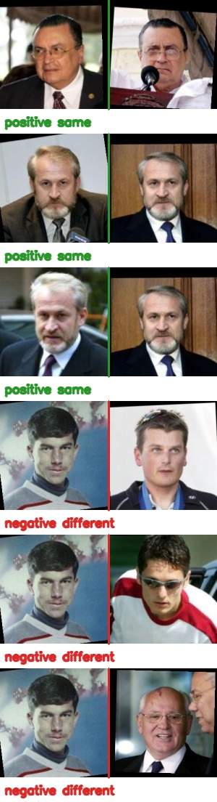
{kind=link}
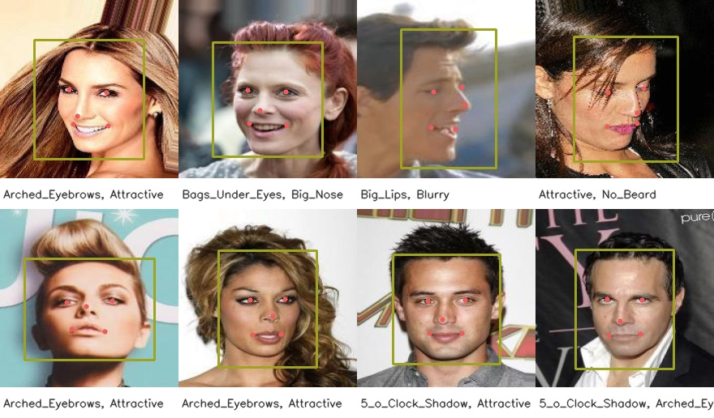
Detection stack
Face detection
MMDetection inference and a RetinaNet WIDER FACE training pipeline were completed; the formal run was limited to one CPU epoch.
- WIDER FACE epoch-1 mAP/AP50: 0.3283
- MMDetection test image: 1 face
{kind=link}
{kind=link}
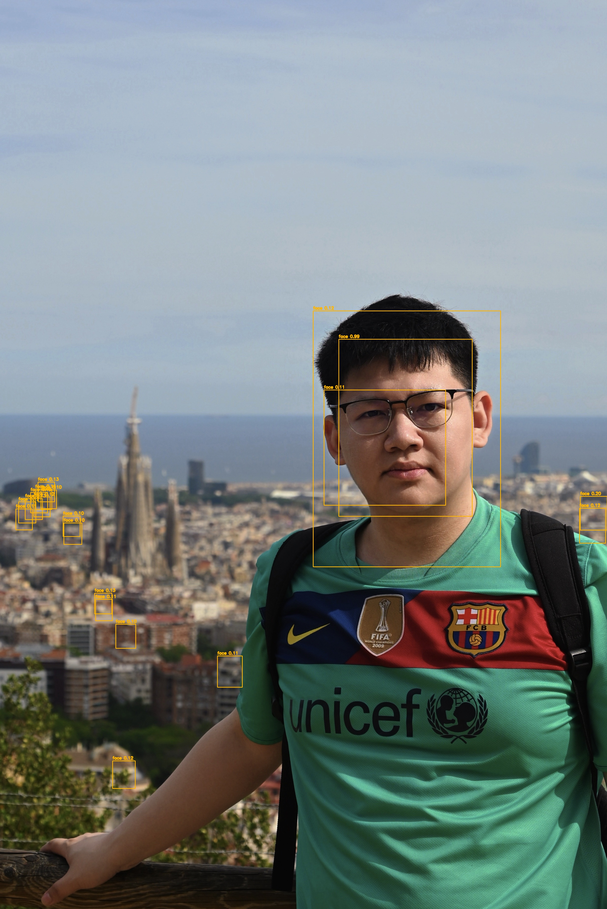
Geometry stack
Landmarks and alignment
A 68-point 300W regressor, five-point extraction, calibrated alignment template, and GT-versus-prediction comparison were implemented.
- Best validation NME: 0.1721
- Best checkpoint epoch: 29 / 30
{kind=link}
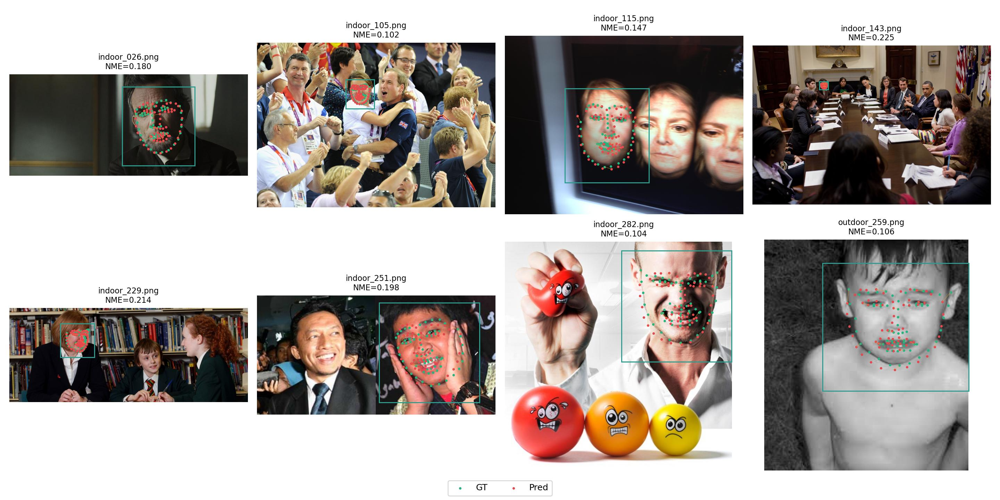
{kind=link}
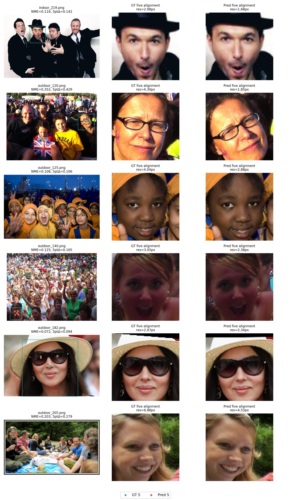
Recognition stack
Face recognition
ResNet50 + ArcFace was trained on a 10,000-identity aligned MS1M subset and evaluated with the official LFW 6,000-pair 10-fold protocol.
- Closed-set validation accuracy: 97.94%
- Self-trained LFW accuracy: 76.98%
- Face-pretrained reference: 96.77%
{kind=link}
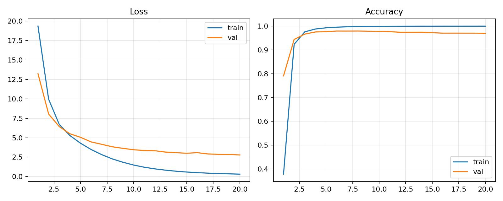
Evidence and entry points
Reports
Deployment stack
Optimization and deployment
The final ArcFace model was dynamically quantized, exported to ONNX, and benchmarked with output-consistency checks.
- Quantized: -20.21% size / 1.174x CPU speedup
- ONNXRuntime: 1.170x CPU speedup
No preview artifact is available.
Generative editing
Face attribute editing
StarGAN was trained on aligned CelebA for hair color, gender, and age-related editing, then refined to 30 epochs.
- Training images: 100,000
- FID: 66.40
- Inception Score: 2.178
{kind=link}
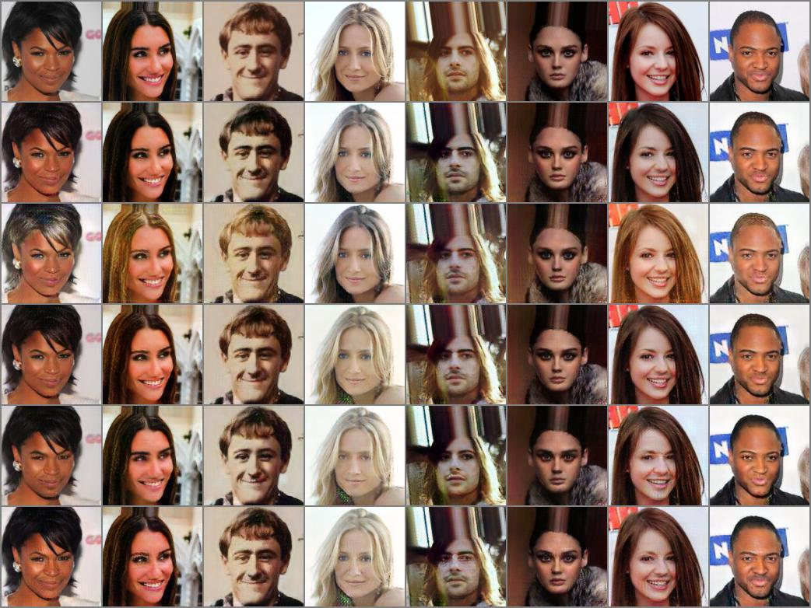
{kind=link}
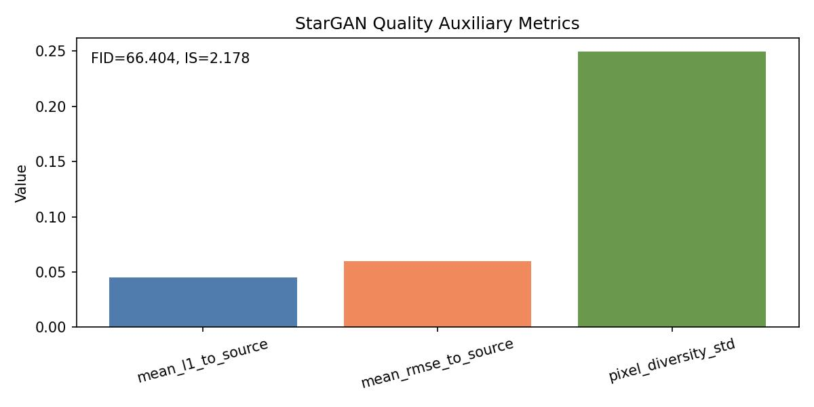
3D geometry
3D face reconstruction
Official 3DDFA_V2 dense reconstruction was integrated and the resulting mesh was rendered from six views with OpenGL.
- Vertices: 38,365
- Triangles: 76,073
- OpenGL views: 6
{kind=link}
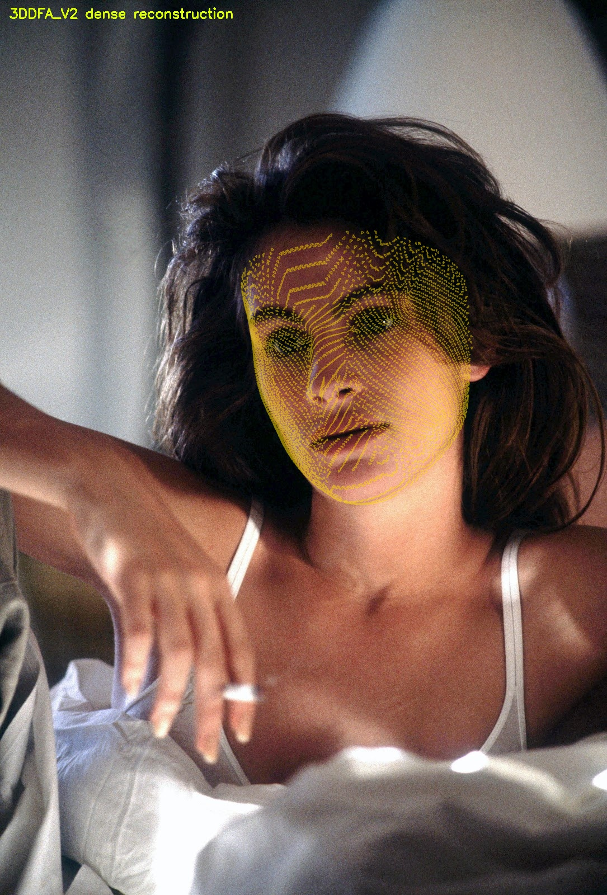
{kind=link}
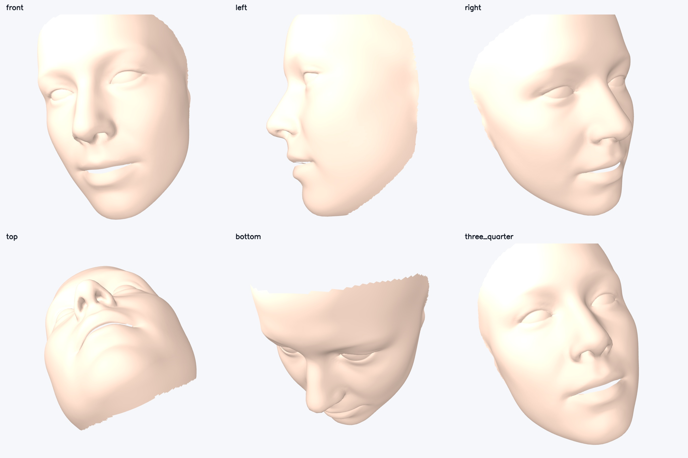
Real-time effects
Dynamic face effects
Dense landmarks drive animated glasses, a hat, beauty smoothing, lipstick, and blush in a reproducible video demo.
- Output: 96 frames @ 24 FPS
- Processing throughput: 6.66 FPS
{kind=link}
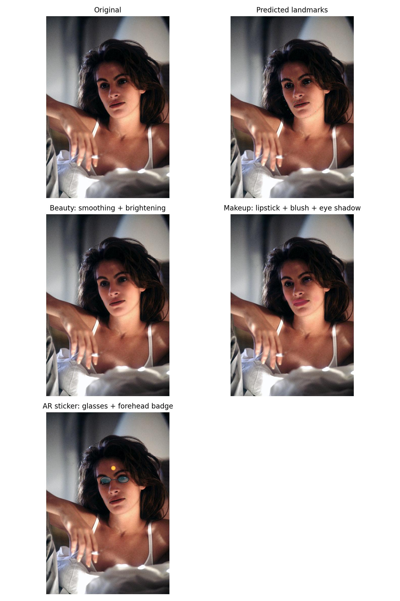
{kind=link}
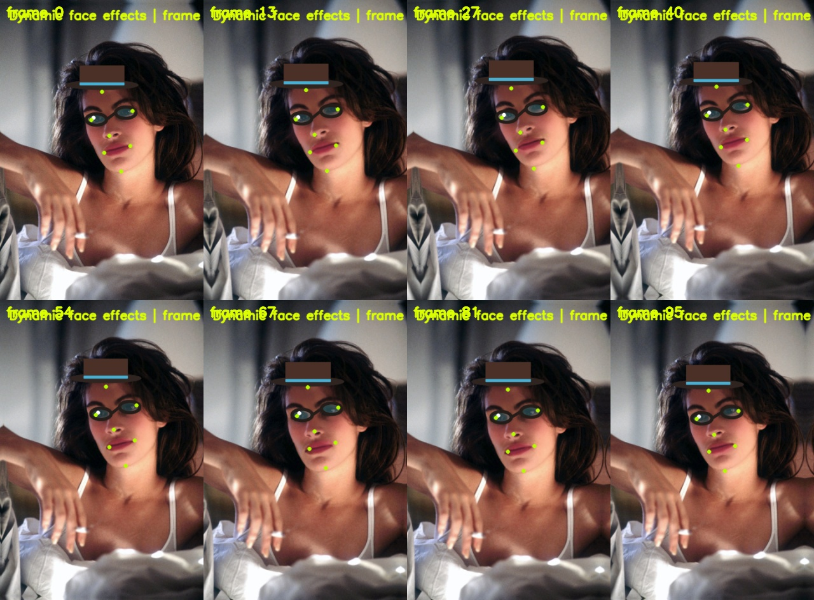